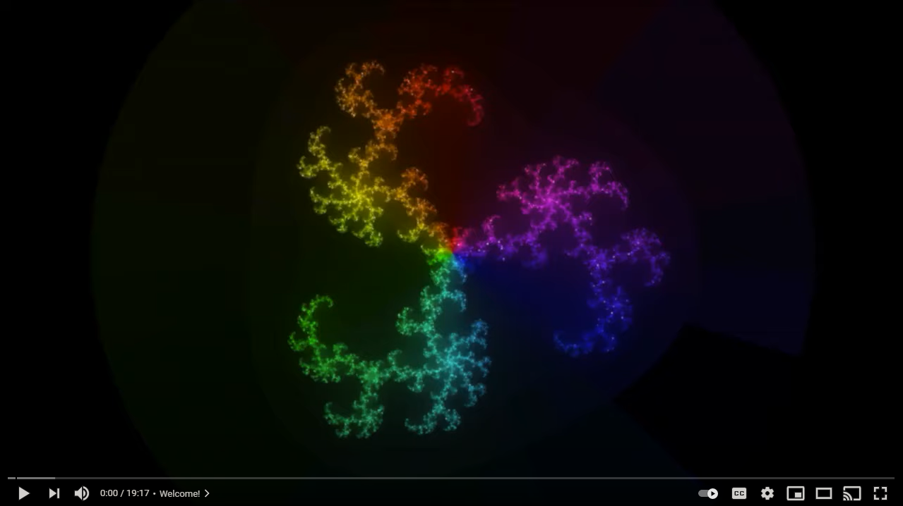

A JuMP extension for expressing and solving infinite-dimensional optimization problems.
InfiniteOpt v0.4 underwent a number of breaking syntax changes relative to previous versions. This is to promote long term code stability and to increase the capabilities of InfiniteOpt. Please review the guide to see updated syntax. Deprecation warnings have been incorporated into this version to help convert old scripts.
What is InfiniteOpt?
InfiniteOpt.jl provides a general mathematical abstraction to express and solve infinite-dimensional optimization problems (i.e., problems with decision functions). Such problems stem from areas such as space-time programming and stochastic programming. InfiniteOpt is meant to facilitate intuitive model definition, automatic transcription into solvable models, permit a wide range of user-defined extensions/behavior, and more.
It builds upon JuMP to add support for many complex modeling objects which include:
- Infinite parameters (e.g., time, space, uncertainty, etc.)
- Finite parameters (similar to
ParameterJuMP) - Infinite variables (e.g., $y(t, x)$)
- Derivatives (e.g., $\frac{\partial y(t, x)}{\partial t}$)
- Measures (e.g., $\int_{t \in \mathcal{D}_t}y(t,x) dt$, $\mathbb{E}[y(\xi)]$)
- More
InfiniteOpt is intended to be used for infinite-dimensional optimization problems. Finite problems (e.g., directly modeling a discrete time model) should instead be modeled using JuMP.
Moreover, InfiniteOpt decouples the infinite-dimensional formulations from the finite transformations typically used to solve them. This readily enables diverse techniques be used to solve these types of problems. By default, we employ direct transcription (i.e., discretization) transformations whose features include:
- Efficient implementations that scale linearly!
- Diverse integral approximations (e.g., quadratures, sampling)
- Diverse derivative approximations (e.g., finite difference, orthogonal collocation)
- Sophisticated support point management system
- Compatible with all JuMP-supported solvers
Accepted infinite/finite problem forms currently include:
- Variables
- Continuous and semi-continuous
- Binary
- Integer and semi-integer
- Semi-definite
- Derivatives
- Ordinary derivative operators (of any order)
- Partial derivative operators (of any order)
- Measures
- Univariate and multivariate integrals
- Univariate and multivariate expectations
- Arbitrary measure operators (via general measure API)
- Objectives
- Linear
- Quadratic (convex and non-convex)
- Higher-order powers (via place holder variables)
- Constraints
- Linear
- Quadratic (convex and non-convex)
- Higher-order powers (via place holder variables)
- Conic
- Semi-definite
- Indicator
Nonlinear objects as defined by JuMP.@NL[macro_name] are not currently supported by InfiniteOpt. See Nonlinear Expressions for more information and possible workarounds.
Infinite-Dimensional Optimization with InfiniteOpt.jl
See our YouTube overview of infinite-dimensional programming and InfiniteOpt.jl's capabilities from JuliaCon 2021: 
Installation
InfiniteOpt.jl is a registered Julia package and can be added simply by inputting the following in the package manager:
(v1.6) pkg> add InfiniteOptPlease visit our Installation Guide for more details and information on how to get started.
First Steps
InfiniteOpt is extension of JuMP, thus new users should start by familiarizing themselves with how to use JuMP first. See JuMP's documentation to learn more.
Once you're familiar with JuMP check out our Quick Start Guide to get started. From there we provide extensive documentation to help you along, please see How to Use the Documentation for more info.
How to Use the Documentation
InfiniteOpt is intended to serve both as a high-level interface for infinite-dimensional optimization and as a highly customizable/extendable platform for implementing advanced techniques. With this in mind, we provide the User Guide sections to walk through the ins and outs of InfiniteOpt. Each page in the User Guide typically contains the following:
- An
Overviewsection describing the purpose of the page. - A
Basic Usagesection to guide usingInfiniteOptat a high level. - Other sections offering more in-depth information/guidance beyond basic usage.
We also provide a technical manual in the API Manual sections which are comprised of the docstrings of all the public methods and types that comprise InfiniteOpt. These detail the technical aspects of each function, method, macro, and composite type.
Details, instructions, templates, and tutorials on how to write user-defined extensions in InfiniteOpt are provided on the Extensions page.
Finally, case study examples are provided in the Examples sections.
Contribution
InfiniteOpt is a powerful tool with a broad scope lending to a large realm of possible feature additions and enhancements. So, we are thrilled to support anyone who would like to contribute to this project in any way big or small.
For small documentation fixes (such as typos or wording clarifications) please do the following:
- Click on
Edit on GitHubat the top of the documentation page - Make the desired changes
- Submit a pull request
For other contributions, please visit our Developers Guide for step by step instructions and to review our style guide.
Citing

If you use InfiniteOpt.jl in your research, we would greatly appreciate your citing it.
@misc{pulsipher2021unifying,
title={A Unifying Modeling Abstraction for Infinite-Dimensional Optimization},
author={Joshua L. Pulsipher and Weiqi Zhang and Tyler J. Hongisto and Victor M. Zavala},
year={2021},
eprint={2106.12689},
archivePrefix={arXiv},
primaryClass={math.OC}
}Acknowledgements
We acknowledge our support from the Department of Energy under grant DE-SC0014114.